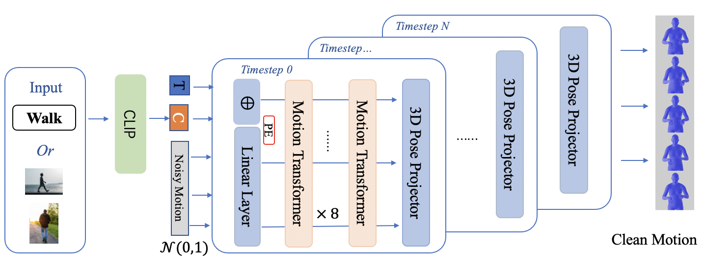

Sign words are the fundamental building blocks of any sign language. In this work, we introduce wSignGen, a word-conditioned 3D American Sign Language (ASL) generation model designed to synthesize realistic and grammatically accurate motion sequences for signed words. Our approach employs a transformer-based diffusion model, trained and evaluated on a curated dataset of 3D motion mesh sequences derived from word-level ASL videos. By integrating CLIP, wSignGen offers two advantages: image-based generation, which is beneficial for non-English speakers and learners, and generalization to unseen synonyms. Experimental results demonstrate that wSignGen significantly outperforms the baseline model. Moreover, human evaluation experiments show that wSignGen can generate high-quality, grammatically correct ASL signs effectively conveyed through 3D avatars.
@inproceedings{dong2024word,
title = {Word-Conditioned 3D American Sign Language Motion Generation},
author = {Dong, Lu and Wang, Xiao and Nwogu, Ifeoma},
year = {2024},
organization = {Association for Computational Linguistics}
}